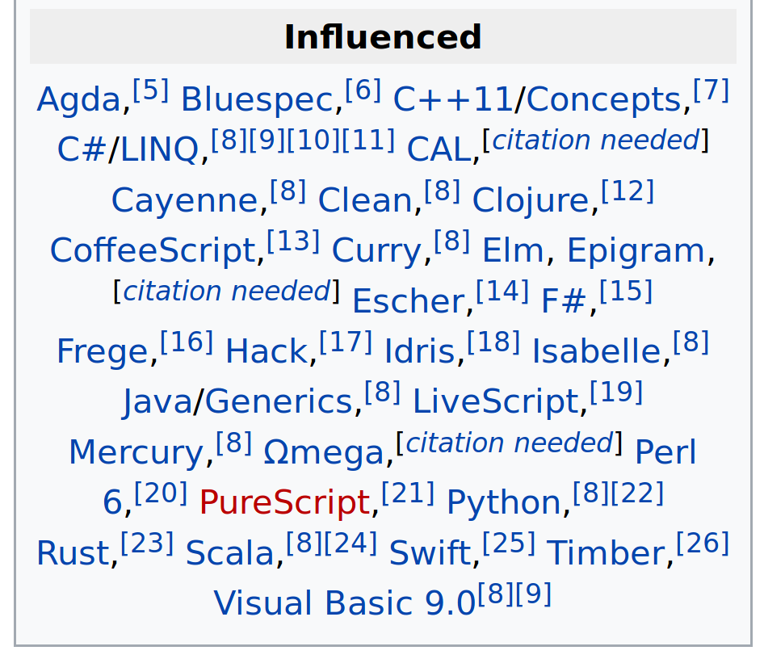

Haskell Beginners Workshop

Part one: Preliminaries
What is Haskell?
A general purpose programming language. It is used for:
- Compilers (PureScript, Elm, Agda, Hask-Scheme, Corrode and many more)
- Build systems (using Shake)
- Scripts (using Turtle)
- Web servers (such as Postgrest) using (Yesod, Servant and many more)
- Frontend applications using Miso, Reflex and many more)
- Databases (acid-state, Project:m36)
- Systems programming (git-annex, xmonad)
- And more
The most popular and active compiler for Haskell is GHC, which is written in Haskell as well.
About Us
Should I learn it?
Do you:
- enjoy learning new things, especially programming languages?
- feel unsatisfied with your current language of choice or practices?
- want to learn about different approaches to building software?
If so, consider learning Haskell. It's fun, it's practical, it's educational.

What is this workshop about?
- We like Haskell, and we'd like to give you a small taste
- We'll show you how to implement a very simple query engine
How?
- We'll teach
- You'll work through increasingly progressing exercises
- We'll supply some of the code
Wait... I want to ask something!
- We'll gladly answer questions so feel free to ask
- We'll avoid potentially long discussions on merits or approaches. We're on a tight schedule!
- Please participate with an open mind!
Let's begin!
Part Two: Expressions and Types
A Haskell (*.hs) file structure
- Module name
- Export list
- Import list
- Declarations
You can clone this git repo:
- Download Haskell Stack and run
stack setupto setup a Haskell environment - Open the file
Main.hsand work there for the rest of the exercises - Use your favorite editor (vim, emacs, gedit, atom) and use spaces instead of tabs
git clone https://github.com/soupi/haskell-workshop.git
cd haskell-workshop
stack runghc Main.hsLet's Learn Some Haskell!
Declarations
<name> = <expression>Expressions
- Expressions are computations
- Computations are evaluated to values
- Some computations are trivial, such as
5 - Some computations are not, such as
(2 * 3) - (4 + 5)
five = 5
negThree = (2 * 3) - (4 + 5)Naming things
We can give a name to a computation in a computation using
let
comp =
let
left = 2 * 3
right = 4 + 5
in
left - rightNaming things
We can give a name to a computation in a computation using
where
comp =
left - right
where
left = 2 * 3
right = 4 + 5Variables are immutable
- Think of variables as values, not as places in memory
=means that both sides are interchangeable- You can rebind a name in scope to something else
x = 5
y =
-- shadowing x in the scope of `let ... in ...`
let
x = 6
in
x + x
z = x + yWhat's the value of
z? Why?
Indentation
- Haskell uses indentation to mark scope, like Python
- Always use spaces!!!
- Use tab size of either 2 or 4 spaces
A simple rule of thumb: Code which is part of some expression should be indented further in than the beginning of that expression
Type Aliases
- Define a type alias using
type <name> = <type> - A type name starts with an uppercase letter -
Integer,Bool,String - Tuples lets us combine two values as one type - the two values can be of different types -
(String, Bool) - Linked lists are homogenous (the elements of the lists are of the same type) -
[Integer]
type Value = Integer
val :: Value
val = 777
Note:
- We use
::to declare the type of a name - We use
=to declare the value of a name
Special syntax: Lists
- The elements of a list must be of the same type
- This is a list of strings
gil'sFavoritefruits :: [String]
gil'sFavoriteFruits =
["Orange", "Banana", "Kiwi", "Avocado", "Mango"]Special syntax - Tuple
- This is a tuple of a string and an integer
- The two values of a tuple can be of different types
gil'sNameAndAge :: (String, Integer)
gil'sNameAndAge = ("Gil", 28)Note:
'is a valid character in a binding name
Special syntax - Tuple and List values
gil'sNameAndAge :: (String, Integer)
gil'sNameAndAge =
( "Gil"
, 28
)
gil'sFavoritefruits :: [String]
gil'sFavoriteFruits =
[ "Orange"
, "Banana"
, "Kiwi"
, "Avocado"
, "Mango"
]Exercise One
Define a type which represents a database table.
- We are going to model row-based tables - a table is a list of rows
- In each row we have many column
- Columns are named values
- Our values are only
Integers
Exercise Two
Define a sample table:
- Should have two columns,
"x"and"y" - Should have at least 4 rows
Part Three: Functions
Function Declarations
Like value declarations, just add argument names before the
=
<function-name> <arg1> <arg2> ... <argN> = <expression>Function Application
- Call functions without parentheses
- Function call is left associative
- Function call takes precendence over operators (and other function calls)
increment n = n + 1
six = increment five
seven = increment (increment five)
incAndAdd x y = increment x + increment y
factorial n =
if n < 1
then n
else n * factorial (n - 1)Exercise Three
Check and pretty-print a table:
- Check if a table is consistent (use supplied function checkTable)
- If it is, return a pretty string representation of it (use supplied function ppTable)
- If it isn't, return the string "Inconsistent data"
Part Four: More on Functions
Function Calls - Partial Application
- We can supply only some of the arguments to a function
- If we have a function that takes N arguments and we supply K arguments, we'll get a function that takes the remaining (N - K) arguments
-- takes 3 arguments, so in this case N = 3
sum3 x y z = x + y + z
-- only supplies 2 arguments (K = 2), 0 and 1.
-- so newIncrement is a function that takes (N - K = 1) arguments
newIncrement = sum3 0 1
-- three is the value 3
three = newIncrement 2Functions are first class citizens
- Functions behave like any other values (such as an integer, a string, etc.)
- Functions can be passed to other functions and returned from functions
compose f g x = f (g x)
-- evaluates to 8
eight = compose double increment 3
-- evaluates to [2,3,4,5]
twoThreeFourFive = map increment [1,2,3,4]Functions are first class citizens
- Functions behave like any other values (such as an integer, a string, etc.)
- Functions can be passed to other functions and returned from functions
- Functions can be put in variables and data structures
apply x f = f x
-- evaluates to [4,6,10]
fourSixTen = map (apply 5) [decrement, increment, double]Functions are first class citizens
mapis left as an exercise to the reader
Exercise Four
- Define a
typefor a database as an association list (a list of tuples of keys and values) of tables and table names - Define a sample
Databasevalue Define a
myMapfunction.- It takes a function and a list as arguments
- It returns a new list with the function applied to each element
Use:
nullto check for the empty listheadandtailto get the first value and the rest of the values of a list:to "add" a value to the start of a list
- Define a
ppTableNamesfunction, which return a string which is the names of the tables in a database- Use the supplied function
getName - Use either
intercalate ", ",unwordsorunlinesto concat a list of strings to a string
- Use the supplied function
Part Five - Do Notation
Do notation
- Do notation is special syntax for combining IO actions in a way that looks imperative
<-is used to bind the result of an IO action to a variable when using do notationletis used to bind an expression to a name (note: no need to write the accompaniedin)
main = do
putStrLn "Hello!"
putStrLn "What is your name?"
result <- getLine
putStrLn ("Nice to meet you, " ++ result)
putStrLn "Here is the result of 1+1: "
let calculation = factorial 100 -- no need for in
putStrLn (show calculation)
putStrLn "Bye!"
Common Error #1
module Main where
main :: IO ()
main = do
putStrLn "Hello! What is your name?"
putStrLn ("Nice to meet you, " ++ getLine)Hello.hs:6:37: error:
• Couldn't match expected type ‘[Char]’
with actual type ‘IO String’
• In the first argument of ‘(++)’, namely ‘getLine’
In the second argument of ‘(++)’, namely ‘getLine’
In the expression: "Nice to meet you, " ++ getLine
|
6 | putStrLn ("Nice to meet you, " ++ getLine)
| ^^^^^^^Common Error #1 - Using IO String in place of String
- Note:
Stringis defined astype String = [Char] - Haskell says it can't match the types
Stringwhich was expected, withIO Stringwhich is the type ofgetLine IO aandaare different types
Common Error #2
module Main where
main :: IO ()
main = do
putStrLn "Hello! What is your name?"
name <- getLine
putStrLn "Nice to meet you, " ++ nameCommon Error #2
Hello.hs:7:3: error:
• Couldn't match expected type ‘[Char]’ with actual type ‘IO ()’
• In the first argument of ‘(++)’, namely
‘putStrLn "Nice to meet you, "’
In a stmt of a 'do' block:
putStrLn "Nice to meet you, " ++ name
In the expression:
do putStrLn "Hello! What is your name?"
name <- getLine
putStrLn "Nice to meet you, " ++ name
|
7 | putStrLn "Nice to meet you, " ++ name
| ^^^^^^^^^^^^^^^^^^^^^^^^^^^^^Common Error #2 - Function application precedes operator application
Parenthesis are needed around the expression string
putStrLn ("Nice to meet you, " ++ name)Exercise Five
- Define a
promptIO action that:- Prints the table names available in the database you defined
- Reads a line from the user
- Looks it up in the database (use
lookup) - Print the value you get or an error
lookupreturns a value of the typeMaybe Table- Use
isJustto check if it's a table or not - Use
fromJustto cast it to a table if it's found
- Use
Part Six - Data Types
Let's talk about types and how to represent a query in Haskell
Defining Types
- Concrete types starts with an uppercase letter
- Use
typeto give a new alias to an existing type. They can be used interchangingly.
type Username = StringType Signatures
We can give values a type signature using ::
myUsername :: Username
myUsername = "soupi"Defining Types - Sum Types
- We can define our own types using the keyword
data - Sum types are alternative possible values of a given type
- Similar to enums in other languages
- We use
|to say "alternatively" - To calculate how many possible values the new type has, we count and sum all the possible values, therefore "sum type"
- Each option must start with an uppercase letter
data KnownColor -- the new type's name
= Red -- One possible value
| Blue
| Green
redColor :: KnownColor
redColor = RedDefining Types - Product Types
- We can also use
datato define compound data of existing types - Similar to structs in other languages
- To calculate how many possible values the new type has, we count and multiply the amount of possible values for each type. Therefore "product type"
data RGB
= MkRGB Int Int Int
{-
^ ^ ^ ^
| | | |
| | | +- This is the blue component
| | |
| | +----- This is the green component
| |
| +--------- This is the red component
|
+------------- This is called the value constructor, or "tag"
-}
magenta :: RGB
magenta = MkRGB 255 0 255Defining types - Sum and Product Types
- We can mix sum and product types in one type
- This is often called an algebraic data type, or ADT
- Value constructors (like
Red,Blue,GreenorRGB) create a value of the type - If they represent a product (like
RGB), value constructors can be used as regular functions to build values of the type - This also means they can be partially applied
data Color
= Red
| Blue
| Green
| RGB Int Int Int
blue :: Color
blue = Blue
magenta :: Color
magenta = RGB 255 0 255Defining types - Records
- Records allow us to name the fields in a product type
- There is more to records, but we won't talk too much about it here
data RGB = MkRGB
{ rgbRed :: Int
, rgbGreen :: Int
, rgbBlue :: Int
}
red :: RGB
red = MkRGB
{ rgbRed = 255
, rgbGreen = 0
, rgbBlue = 0
}Exercise Six
Define a Query data type with two value constructors:
Table- which is a name of a table in the databaseValues- which is an in-place table value
This value constructors represents an SQL data source query
-- This is like our value constructor, we write a table (list of rows) in-line
INSERT INTO t VALUES (1,2,3),(4,5,6);
-- This is like our `Table` value constructor,
-- We write a table name to reference a table in the database
SELECT * FROM t;The Type of Functions
We use
->to denote the type of a function from one type to another type
increment :: Int -> Int
increment n = n + 1
sum3 :: Int -> Int -> Int -> Int
sum3 x y z = x + y + z
supplyGreenAndBlue :: Int -> Int -> Color
supplyGreenAndBlue = RGB 100The Type of Functions
->is right associative, The function definitions from the previous slide will be parsed like this:
increment :: Int -> Int
increment n = n + 1
sum3 :: (Int -> (Int -> (Int -> Int)))
sum3 x y z = x + y + z
supplyGreenAndBlue :: (Int -> (Int -> Color))
supplyGreenAndBlue = RGB 100This is why partial function application works.
Parametric Polymorphism in Type Signatures
- Also known as "generics" in other languages
- Names that starts with an upper case letter in types are concrete types
- Names that starts with a lower case letter in types are type variables
- Just as a variable represent some value of a given type, a type variable represents some type
- A type variable represents one type across the type signature (and function definition) in the same way a variable represent a value throughout the scope it's defined in
Parametric Polymorphism in Type Signatures
-- I only take concrete `Int` values
identityInt :: Int -> Int
identityInt x = x
five :: Int
five = identityInt 5
-- `a` represents any one type
identity :: a -> a
identity x = x
seven :: Int
seven = identity 7
true :: Bool
true = identity True
const :: a -> b -> a
const x y = xParametric Polymorphism in Type Signatures
-- will fail because nothing in the type signature suggests that
-- `a` and `b` necessarily represent the same type
identity1 :: a -> b
identity1 x = x
-- will fail because we don't know if `a` is `Int`
identity2 :: a -> Int
identity2 x = x
-- will fail because we don't know if `a` is `Int`
identity3 :: Int -> a
identity3 x = xOne More Thing About Functions
- In Haskell functions are first class values
- They can be put in variables, passed and returned from functions, etc
- This is a function that takes two functions and a value, applies the second function to the value and then applies the first function to the result
- AKA function composition
compose :: (b -> c) -> (a -> b) -> a -> c
compose f g x = f (g x)
f . g = compose f gOne More Thing About Functions
- Remember,
->in type signatures is right associative - Doesn't it look like we take two functions and return a third from the type signature?
compose :: ((b -> c) -> ((a -> b) -> (a -> c)))
compose f g x = f (g x)Exercise Seven
Go back to the functions you defined and create a type signature for them
Recursive Types and Data Structures
- A recursive data type is a data definition that refers to itself
- This lets us define even more interesting data structures such as linked lists and trees
data IntList
= EndOfIntList
| ValAndNext Int IntList
-- the list [1,2,3]
list123 :: IntList
list123 = ValAndNext 1 (ValAndNext 2 (ValAndNext 3 EndOfList))Recursive Types and Data Structures
- A recursive data type is a data definition that refers to itself
- This lets us define even more interesting data structures such as linked lists and trees
data IntTree
= Leaf
| Node
IntTree -- Left subtree
Int -- Node value
IntTree -- Right subtree
-- 2
-- / \
-- 1 3
-- /
-- 1
tree1123 :: IntTree
tree1123 =
Node
(Node (Node Leaf 1 Leaf) 1 Leaf)
2
(Node Leaf 3 Leaf)
Defining Types - Type variables
- We can use type variables when defining types
- We can define generic structures
- This way we don't have to restrict our structure to a specific type such as
IntorBoollike in the previous slide
-- a value of type a or nothing
data Maybe a
= Just a
| Nothing
-- a value of type a or a value of type b
data Either a b
= Left a
| Right b
-- A linked list of `a`s
-- Note: there's also a built in syntax in Haskell for linked lists
data List a -- [a] -- special syntax for a linked list of a generic type `a`
= Nil -- [] -- special syntax for the empty list
| Cons a (List a) -- x : xs -- special operator for constructing a listExercise Eight
To your Query data type, add the a Select option with the following arguments:
- A list of column names it should output and their new names (the select list)
- A query that should be used as input to the select
This represents an SQL SELECT statement
SELECT x as x1, x as x2, y as y -- the select list
FROM t; -- the inner query (a table named 't')Case Expression (Pattern Matching)
- Allows us to write control flows on data types
- Matches from top to bottom
case <expr> of
<pattern1> -> <result1>
<pattern2> -> <result2>
...
<patternN> -> <resultN>Case Expression (Pattern Matching)
- Allows us to write control flows on data types
- Matches from top to bottom
myIf :: Bool -> a -> a -> a
myIf test trueBranch falseBranch =
case test of
True -> trueBranch
False -> falseBranchCase Expression (Pattern Matching)
- Allows us to write control flows on data types
- Matches from top to bottom
factorial :: Int -> Int
factorial num =
case num of
0 -> 1
n -> n * factorial (n - 1)Case Expression (Pattern Matching)
- Allows us to write control flows on data types
- Matches from top to bottom
- The pattern
_means match anything
colorName :: Color -> String
colorName color =
case color of
Red -> "red"
Green -> "green"
Blue -> "blue"
RGB 255 0 255 -> "magenta"
RGB _ 255 _ ->
"well it has a lot of green in it"
RGB _ 255 n ->
"It has a lot of green and " ++ show n ++ " in the blue component"
_ -> "i don't know this color"Exercise Nine
Before jumping into writing a query engine, let's first write a direct-style interpreter for the following data type:
data Expr
= Value Integer
| Add Expr Expr
| Mul Expr ExprThis type represents a simple mathematical expression.
Write a function eval :: Expr -> Int that calculates the result.
Exercise Ten
Write an interpreter for our Query data type
- You'll also need a
Databaseto lookup tables - Your interpreter is a function that takes a query and a database and returns a table
Clues:
- For
Select, You'll need to usemap(ormyMap). In two different ways. - You can use
lookupColto search a value of a column in a row by the column's name - You can use
error "Lookup failed"to terminate early
Exercise Eleven - a REPL
Create an IO action that reads a query of a user, interprets it and displays it back
Clues:
- Use
readQueryto parse the query from the user - Use the function
replwith your IO action as a parameters to create a REPL.
Exercise Twelve
- Add a
Unionconstructor for ourQuerydata type and handle it in the interpreter- You'll need to verify that the schemas for the two inner queries are the same
This constructor represents a UNION operator in SQL
SELECT x as x1, y as y -- the select list
FROM
t1 UNION t2 -- the inner queries (two tables named 't1' and 't2')
;Exercise Thirteen
- Add a
Restrictconstructor for ourQuerydata type and handle it in the interpreter- You'll need to define a condition data type as well
- You'll need to use
filterwhich takes a predicate and a list and returns a list that contains only values that satisfy the predicate
This constructor represents a where clause in SQL
SELECT x as x1, x as x2, y as y -- the select list
FROM t -- the inner query (a table named 't')
where y = 1
;I hope we gave you a good taste of Haskell, but:
We barely scratched the surface!
We didn't cover a lot of things
- Many novel language features
- Common idioms, abstractions and techniques
- Libraries, DSLs and Data Structures
- Tooling